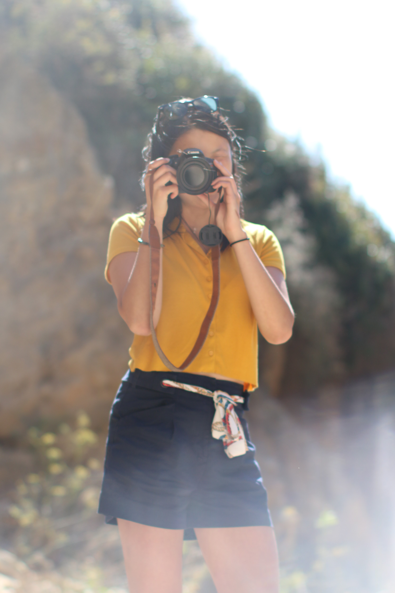

Hey, I'm Anna Chang.
Nice to meet you! I'm currently a student at UC Berkeley, relying on photography as my way to escape and explore my surroundings. Spending a summer abroad in Southeast Asia inspired me to create this portfolio in order to share all that I have learned. I revel in capturing the mood of the moment, the power of universal expressions—of genuine laughter or smug grins—that can overcome any cultural or language barriers. Even within one instance in time, each individual creates their own perception of that moment, their own story. And that’s why I’m captivated by the influence of photography. I hope I can share my perspective with you through the experiences and people I have come across over the years. Enjoy!